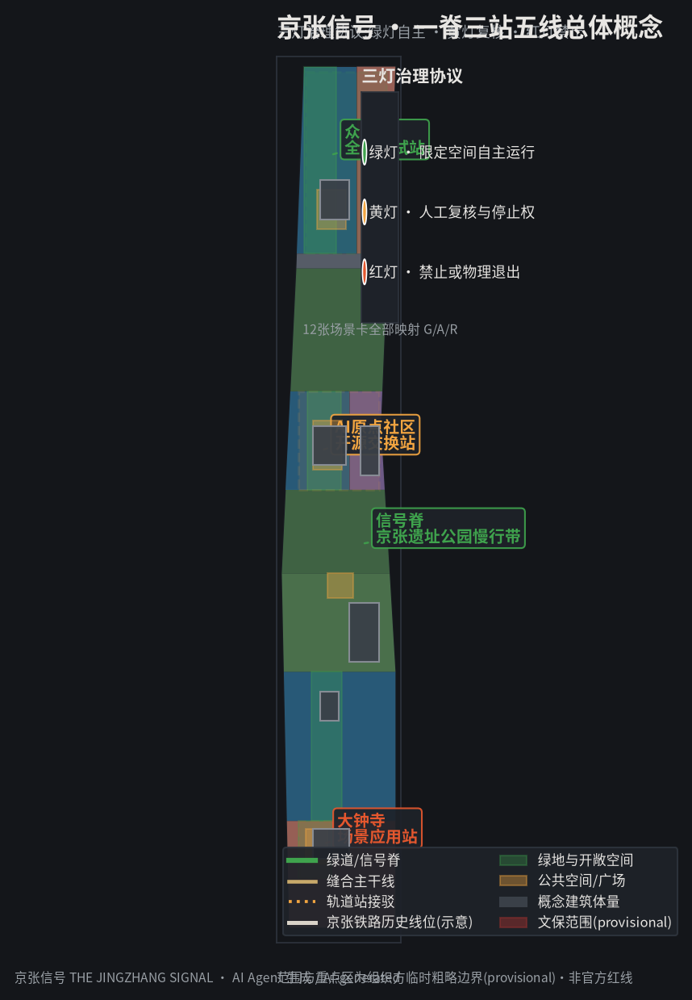
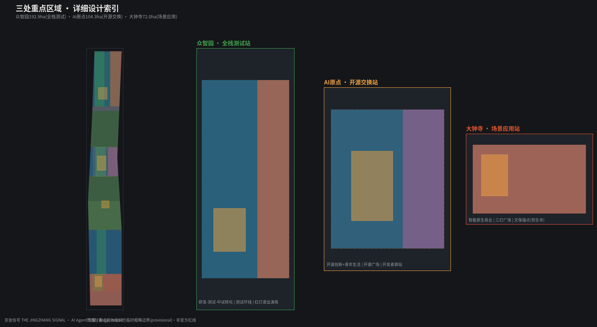
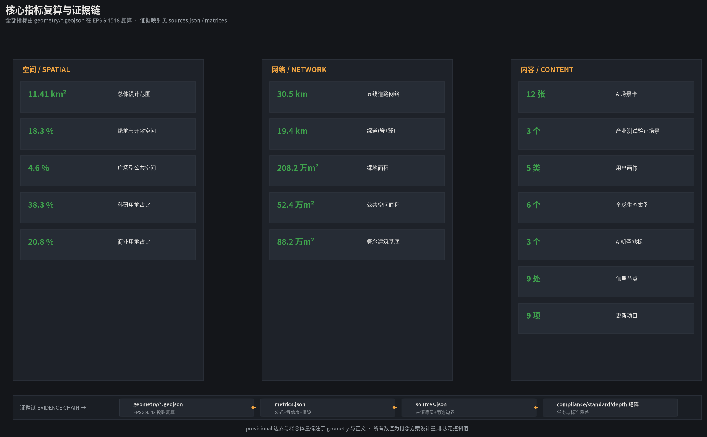
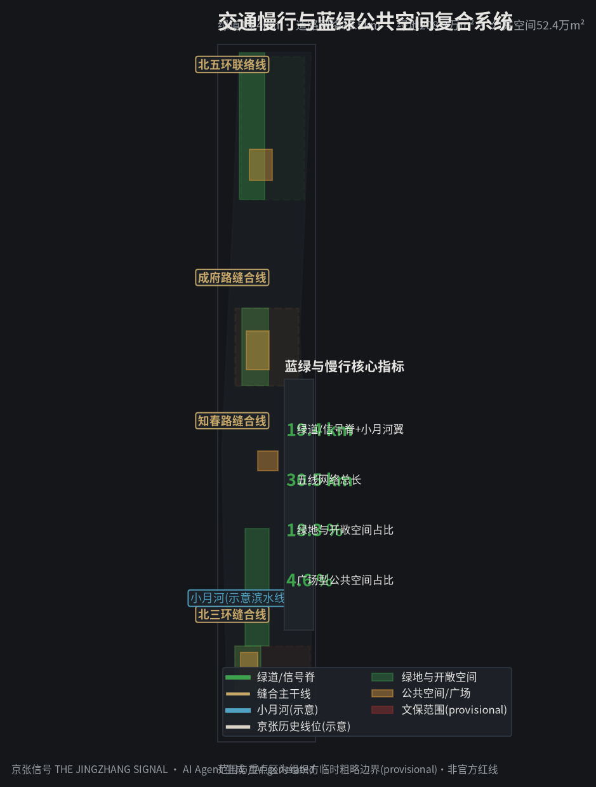
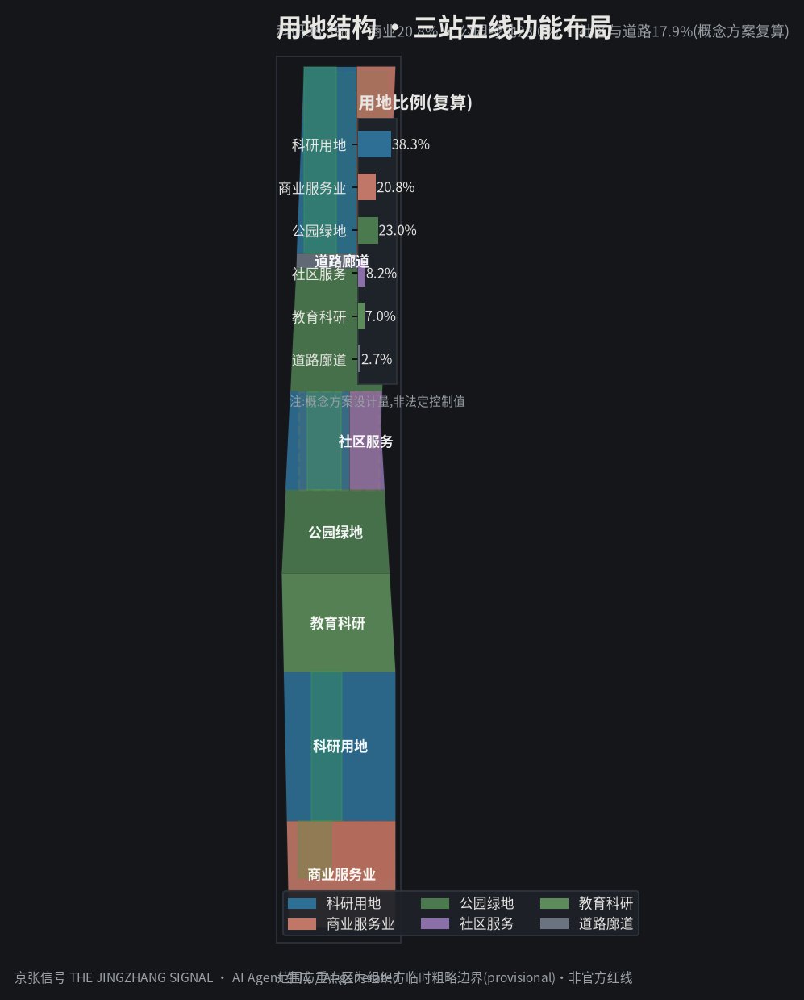

统筹研究范围
43.6 km²AI创新生态、三区两翼协同、未来城市形态与品牌叙事。
以京张铁路百年信号史为原型——1909人工旗语、2019智能京张自动驾驶列控——提出三灯治理协议:绿灯自主运行、黄灯人工复核、红灯禁止退出。空间结构为一脊三站五线。本页为离线电子展示,权威数据以 GeoJSON、metrics.json 与矩阵为准。
用地分区、交通慢行、蓝绿公共空间、建筑更新与AI场景节点置于同一证据图,图面重点为设计意图、廊道、节点与公共空间网络。

统筹研究范围(43.6km²)→总体设计范围(11.41km²)→重点区域范围(368.4ha),逐级落实产业战略、城市更新与重点片区详细设计。
AI创新生态、三区两翼协同、未来城市形态与品牌叙事。
控规深度城市更新:一脊三站五线、用地结构、交通市政、遗址公园活力带。
众智园、AI原点社区、大钟寺三处详细设计(规划综合实施方案深度)。
三处重点区分别承担场景应用、开源交换与全栈测试,构成信号站的完整功能链。
智能原生新业态与体验门户;觉生寺文保锚点;三灯广场承担治理展示与公共活动;AI+消费/健康/法律等黄灯复核服务。
世界级AI创新生态枢纽;西研发东生活;开源广场承载开发者集会、黑客松与荣誉展示;开源交换站提供代码托管、数据沙箱与算力券。
AI全栈自主创新与治理话语权验证场;西测试东转化;测试环线承接低速自动驾驶、机器人配送、具身智能;红灯退出演练唯一场所。

12张场景卡,其中3张为产业测试验证场景;每张映射三灯信号状态(绿=自主,黄=复核,红=禁止)。
众智园封闭与半开放路段测试,具备物理中断与远程接管(产业测试验证)
信号脊绿道测试配送与巡检机器人,涉密区域红灯禁入(产业测试验证)
北三环/知春路节点AI信号配时优化,交通部门复核后生效(产业测试验证)
沿信号脊讲解1909人工信号到2019智能列控,保留人工讲解备选
面向老年人/残障人士语音导航,无人工备份的纯自动化通道红灯禁入
代码托管、数据沙箱、算力券,人工运维团队兜底
大钟寺片区医疗健康服务智能导航,问诊结论人工复核
创业团队合规问答,结论附人工律师复核通道
商业计划书与融资路径建议,资金承诺内容红灯禁止自动生成
全球开发者大会嘉宾导览翻译,禁止收集身份行程数据
信号脊活动信息推荐,音量时段人工复核
AI场景状态总览:红灯清单/黄灯复核/绿灯指标全量留痕供审计
由 geometry/*.geojson 在 EPSG:4548 复算;provisional 边界下为概念设计量,非法定控制值。

compliance_matrix.json 覆盖公告 1.3/1.4/1.5 全部任务与 agent.1-agent.6;standard_matrix.json 覆盖6项标准;design_depth_matrix.json 15项设计深度全部 complete。
| 任务 | 覆盖 |
|---|---|
| 1.3.1-1.3.3 | 世界级AI生态 · 新型城市形态 · 高品质城区 |
| 1.4.1-1.4.3 | 三层范围框架与几何 |
| 1.5.1-1.5.3 | 产业生态 · 更新 · 交通市政 · 遗址公园 · 风貌 · 三重点区 |
| agent.1-6 | 命名/Logo · 生态案例 · 场景卡 · 朝圣地标 · 文化叙事 · 长期运营 |
正式判断仅使用 formal-ready 来源;背景与 provisional 资料标注用途边界。全部假设与缺口见 assumptions.json。
正式判断基于:征集公告、智能体任务书、城市设计管理办法、控规办法、用地分类指南、生成式AI办法、无障碍法;国际案例仅作机制类比。
控规容积率/高度/密度、现状建筑普查、权属、消防、文保四至等为待补资料;三灯协议为概念治理机制。
确定性校验、空间审查、视觉包装与专业证据审查四道闸门;当前 provisional 边界仅支持 intake 展示,正式评分前需替换官方多边形并整体复算。

